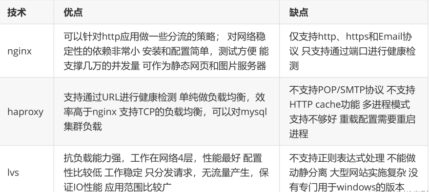
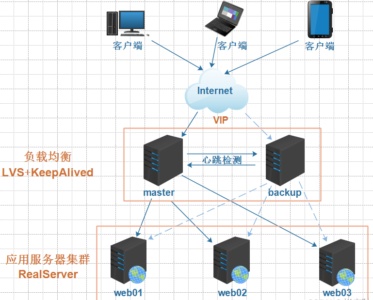
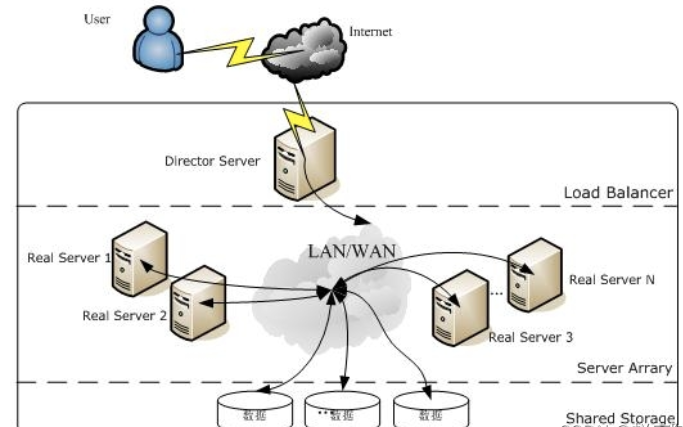
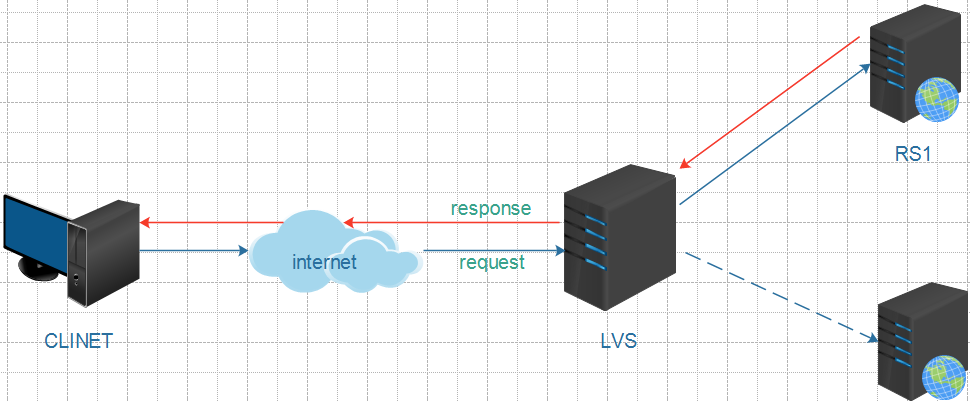
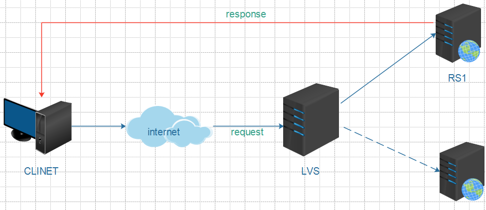
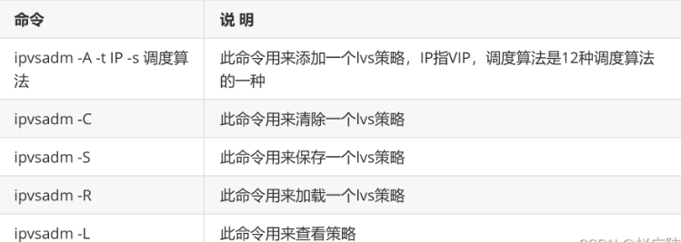
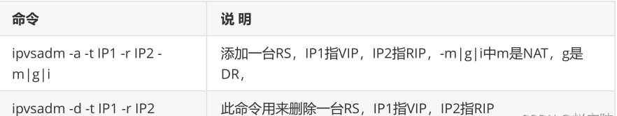
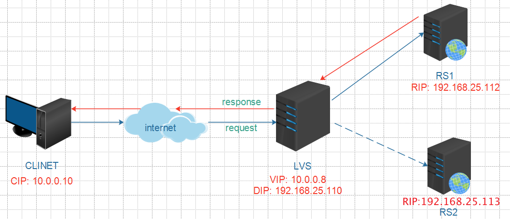
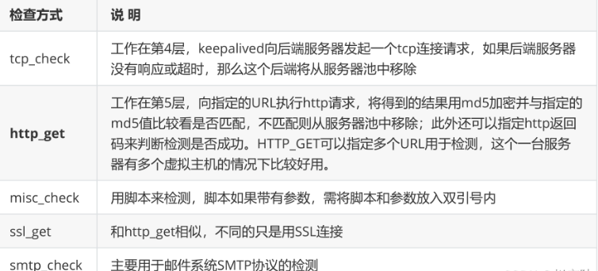

1 构建高可用集群
1.1 什么是高可用集群
高可用集群（High Availability Cluster，简称HA Cluster），是指以减少服务中断时间为目的得服务器
集群技术。它通过保护用户得业务程序对外部间断提供的服务，把因为软件，硬件，认为造成的故障对
业务得影响降低到最小程度。总而言之就是保证公司业务7*24小时不宕机
1.2 高可用衡量标准
衡量集群的可用性(HA)高低，可以从MTTF（平均无故障时间）和MTTR（平均故障维修时间）进行考
量，公式为：HA=MTTF/(MTTF+MTTR)*100%，具体衡量标准可以参考下表
1.3 高可用保障
对集群中的服务器进行负载均衡、健康监测，并在服务器出现故障时能进行故障转移，自动切换到正常
服务器是高可用保障的必要手段
1.3.1 负载均衡
常见的负载均衡手段如下：
硬件负载均衡，如F5
软件负载均衡，如nginx、haproxy、lvs
几种软件负载均衡技术比较:

1.3.2 健康监测和自动切换
常见的健康监测和自动切换软件有keepAlived和heartBeat，其二者对比如下:
Keepalived使用更简单：从安装、配置、使用、维护等角度上对比，Keepalived都比Heartbeat要简单
Heartbeat功能更强大：Heartbeat虽然复杂，但功能更强大，配套工具更全，适合做大型集群管理，
而Keepalived主要用于集群倒换，基本没有管理功能.

1.4 高可用拓扑图
2 软件负载均衡技术LVS
2.1 LVS简介
2.1.1 什么是lvs
础知识:网络协议必知必会
LVS是Linux Virtual Server的简写，在1998年5月由章文嵩博士成立。
工作在OSI模型的四层，基于IP进行负载均衡。
在linux2.2内核时，IPVS就已经以内核补丁的形式出现。
从2.4版本以后，IPVS已经成为linux官方标准内核的一部分。
a. lvs项目介绍 http://www.linuxvirtualserver.org/zh/lvs1.html
b. lvs集群的体系结构 http://www.linuxvirtualserver.org/zh/lvs2.html
c. lvs集群中的IP负载均衡技术 http://www.linuxvirtualserver.org/zh/lvs3.html
d. lvs集群的负载调度 http://www.linuxvirtualserver.org/zh/lvs4.html
e. lvs中文站点 http://zh.linuxvirtualserver.org
2.1.2 lvs官方资料链接
2.2 lvs拓扑
2.2.1 lvs术语
LVS服务器(DS)
集群中节点服务器(RS)
虚拟IP地址（VIP），用于向客户端提供服务的IP地址（配置于负载均衡器上）
真实服务器的IP地址（RIP）， 集群中节点服务器的IP地址
负载均衡器IP地址（DIP），负载均衡器的IP地址，物理网卡上的IP
客户端主机IP地址（CIP），终端请求用户的主机IP地址
2.2.2 工作原理和拓扑图
LVS负载均衡调度技术是在linux内核中实现的，使用配置LVS时，不是直接配置内核中的IPVS，而是通
过IPVS的管理工具IPVSADM来管理配置，LVS集群负载均衡器接受所有入站客户端的请求，并根据算法
来决定由哪个集群的节点来处理请求。

2.3 lvs的四种工作模式
2.3.1 TUN模式
TUN(Tunneling)模式需要服务器支持IP隧道（IP tunneling）技术，限制较大，一般不用。

2.3.2 NAT模式
AT(Network Address Translation)模式是基于NAT技术实现的。在此模式中，LVS服务器既要处理请 求的接入，又要处理请求的响应。因此存在较大的性能瓶颈。

2.3.3 DR模式
DR(Direct Routing)模式是LVS的默认工作模式，也叫直接路由模式。只处理请求的接入，不处理请求的
响应。因此性能高，瓶颈小。

2.3.4 FULLNAT模式
FULLNAT( Full Network Address Translation)可以说是淘宝定制化的技术，linux内核不支持。
2.4 LVS调度算法
2.4.1 静态调度算法

2.4.2 动态调度算法

2.5 lvs基本命令
对于lvs的操作，主要是通过ipvsadm软件实现，常用的lvs操作命令如下:
2.5.1 集群服务管理

2.5.2 集群RS管理

2.6 lvs实战
2.6.1 NAT模式实战

vi /etc/sysctl.conf
#添加如下内容并保存退出
net.ipv4.ip_forward = 1
#执行如下命令使修改生效
sysctl -p
#指定负载80端口的VIP，并指定调度策略为轮询
[root@lvs01 ~]# ipvsadm -A -t 10.0.0.8:80 -s rr
#添加两台RS，并指定负载均衡工作模式为NAT
[root@lvs01 ~]# ipvsadm -a -t 10.0.0.8:80 -r 192.168.25.112 -m
[root@lvs01 ~]# ipvsadm -a -t 10.0.0.8:80 -r 192.168.25.113 -m
#查看上述配置是否生效
[root@lvs01 ~]# ipvsadm -Ln
IP Virtual Server version 1.2.1 (size=4096)
Prot LocalAddress:Port Scheduler Flags
-> RemoteAddress:Port Forward Weight ActiveConn InActConn
TCP 10.0.0.8:80 rr
-> 192.168.25.112:80 Masq 1 0 0
-> 192.168.25.113:80 Masq 1 0 0
NAT模式存在的问题–>LVS性能瓶颈
2.6.2 DR模式实战
ARP（Address Resolution Protocol）地址解析协议，是根据IP地址获取物理地址
（MAC）的一个 TCP/IP协议。主机发送信息时将包含目标IP地址的ARP请求广播到局域网络上的
所有主机，并接收返 回消息，以此确定目标的物理地址；收到返回消息后将该IP地址和物理地址
存入本机ARP缓存中并 保留一定时间，下次请求时直接查询ARP缓存以节约资源。
DR模式拓扑图

2.6.3 四个问题
a. 如果LVS服务器挂了会出现什么问题?
b. 如何进行故障转移、自动切换?
b. 如果后端某台RS服务器挂了会出现什么问题？
d. 如何获知RS服务器状态?
3 KeepAlived
3.1 keepAlived简介
Keepalived的作用是检测服务器状态，如果有一台web服务器宕机，或工作出现故障，Keepalived将检
测到，并将有故障的服务器从系统中剔除，同时使用其他服务器代替该服务器的工作，当服务器工作正
常后Keepalived自动将服务器加入到服务器群中
3.2 keepAlived主要特点
3.2.1 健康检查

3.2.2 故障迁移
VRRP协议
在现实的网络环境中。主机之间的通信都是通过配置静态路由或者(默认网关)来完成的，而主机之间的
路由器一旦发生故障，通信就会失效，因此这种通信模式当中，路由器就成了一个单点瓶颈，为了解决
这个问题，就引入了VRRP协议。
VRRP协议是一种容错的主备模式的协议，保证当主机的下一跳路由出现故障时，由另一台路由器来代
替出现故障的路由器进行工作，通过VRRP可以在网络发生故障时透明的进行设备切换而不影响主机之
间的数据通信。
故障迁移原理
在 Keepalived 服务正常工作时，主 Master 节点会不断地向备节点发送（多播的方式）心跳消息，用
以告诉备 Backup 节点自己还活着，当主 Master 节点发生故障时，就无法发送心跳消息，备节点也就
因此无法继续检测到来自主 Master 节点的心跳了，于是调用自身的接管程序，接管主 Master 节点的
IP 资源及服务。而当主 Master 节点恢复时，备 Backup 节点又会释放主节点故障时自身接管的 IP 资源
及服务，恢复到原来的备用角色。
3.3 keepAlived原理
3.4 分布式选主策略
3.4.1 仅设置priority
在一个一主多备的Keepalived集群中，priority值最大的将成为集群中的MASTER节点，而其他都是
BACKUP节点。在MASTER节点发生故障后，BACKUP节点之间将进行“民主选举”，通过对节点优先级值
priority和weight的计算，选出新的MASTER节点接管集群服务。
3.4.2 设置priority和weight
weight值为正数时
在vrrp_script中指定的脚本如果检测成功，那么MASTER节点的权值将是weight值与priority值之和；如
果脚本检测失效，那么MASTER节点的权值保持为priority值
MASTER 节点vrrp_script脚本检测失败时，如果MASTER节点priority值小于BACKUP节点weight值与
priority值之和，将发生主、备切换。
MASTER节点vrrp_script脚本检测成功时，如果MASTER节点weight值与priority值之和大于BACKUP节
点weight值与priority值之和，主节点依然为主节点，不发生切换。
weight值为负数时
在vrrp_script中指定的脚本如果检测成功，那么MASTER节点的权值仍为priority值，当脚本检测失败
时，MASTER节点的权值将是priority值与weight值之差
MASTER节点vrrp_script脚本检测失败时，如果MASTER节点priority值与weight值之差小于BACKUP节
点priority值，将发生主、备切换。
MASTER节点vrrp_scrip脚本检测成功时，如果MASTER节点priority值大于BACKUP节点priority值时，
主节点依然为主节点，不发生切换。
weight设置标准
对于weight值的设置，有一个简单的标准，即weight值的绝对值要大于MASTER和BACKUP节点priority
值之差。由此可见，对于weight值的设置要非常谨慎，如果设置不好，主节点发生故障时将导致集群角
色选举失败，使集群陷于瘫痪状态。